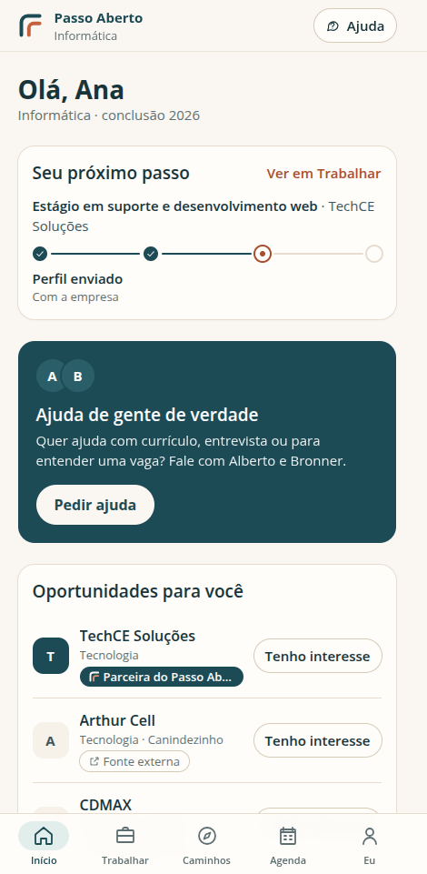
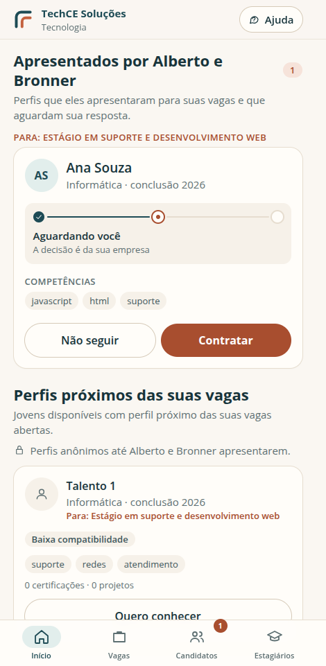
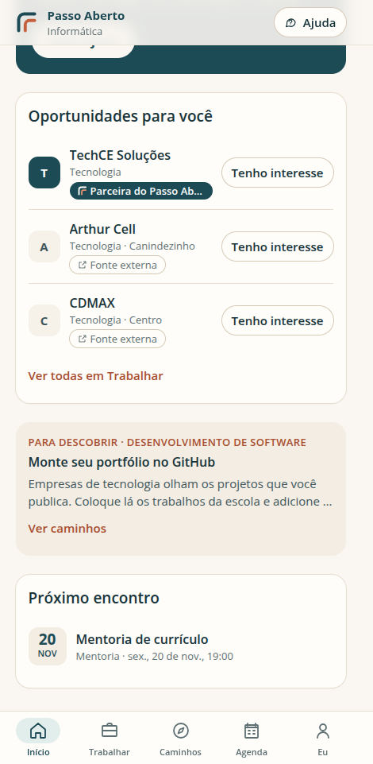
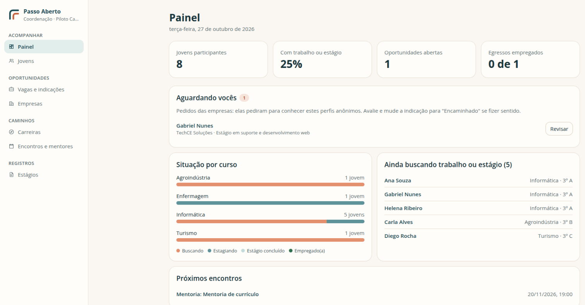

Piloto em estruturação · Cascavel, CE
Caminhos depois da escola. Gente ao lado.
Uma proposta de piloto em Cascavel (CE) que aproxima jovens recém-formados de trabalho e estudo, com acompanhamento de perto. Procuramos parceiros para começar.

O problema e a proposta
Uma oportunidade pode existir e ainda assim parecer distante. O jovem nem sempre sabe onde procurar, como apresentar o que já fez ou como chegar a uma entrevista.
O primeiro grupo vem da EEEP Edson Queiroz, em Cascavel. A enfermagem guia as primeiras conversas, sem limitar o projeto a essa área. A escola é o ponto de partida, sem parceria institucional formalizada.
Vamos buscar oportunidades com prioridade em Fortaleza. O projeto não substitui o estágio obrigatório do 3º ano: amplia caminhos de trabalho e formação.
-
Trabalhar
Vagas de emprego e estágio com função, exigências, local, prazo e forma de candidatura explicados.
-
Estudar
Cursos, acesso à universidade e bolsas, com critérios e prazos claros. Sem vagas garantidas pelo projeto.
-
Descobrir caminhos
Pesquisa, outras áreas e experiências sociais, inclusive internacionais. Caminhos a investigar, não ofertas prontas.
Gente ao lado em cada passo
Alberto e Bronner vão estar presentes em Cascavel para ajudar o jovem a entender uma oportunidade, preparar currículo e carta e se organizar para a entrevista.
Currículo com ajuda de IA
Uma conversa por texto que organiza as informações e entrega ao próprio jovem um PDF e um Word editável.
- Não inventa formação, experiência ou competências
- Não cria perfil público nem envia o currículo a empresas
Como um parceiro participa
Tudo começa com uma conversa, sem compromisso financeiro. A participação é combinada caso a caso.
-
Apresente uma oportunidade
Função, requisitos, local, prazo e canal de candidatura. Revisamos e levamos ao grupo. A seleção e a contratação seguem com a empresa.
-
Torne a seleção acessível
Etapas em Cascavel quando possível, ou instruções claras e ajuda para organizar o deslocamento. Sem obrigação de custear transporte.
-
Compartilhe o que sabe
Explique os requisitos de entrada na sua área, ajude a avaliar oportunidades ou a preparar os jovens. Formato combinado juntos.
Nos três primeiros meses, queremos jovens cadastrados, oportunidades elegíveis publicadas e um canal de apoio a currículos e entrevistas funcionando.
Contato do projeto
Converse com a coordenação
Escreva para o contato do projeto. A conversa é com Alberto e Bronner, para entender o que sua organização procura e combinar um começo possível.
O protótipo
Uma versão navegável, com dados fictícios, para mostrar a ideia na prática.
Para a empresa
- Candidatos que já entenderam a vaga. A coordenação explica requisitos e prepara antes de indicar.
- Um contato local que acompanha e prepara. Perfis chegam anônimos; a coordenação decide cada encaminhamento.
- Sem custo e sem exclusividade. A seleção e a contratação continuam com você.

Para o jovem
- Ficha guiada com competências, certificações e projetos.
- Oportunidades e eventos com o andamento de cada indicação.
- Empresas da área em lista e mapa, com “Tenho interesse” para a coordenação saber com quem conversar.

Para a coordenação
- Situação de cada jovem e de cada turma.
- Oportunidades com compatibilidade sugerida e funil de indicação.
- Pedidos das empresas, eventos e mentorias.

Cuidado e transparência
O jovem vai saber de onde vem cada oportunidade, o que ela exige e para quem vai seus dados.
-
Direta
Trazida pela empresa
Com requisitos da função e canal de candidatura identificados.
-
Externa
Encontrada em fonte pública
Com origem, link e data da consulta. Encontrar um anúncio não torna a empresa parceira; no protótipo ela aparece como “ainda não é parceira”.
-
Revisão humana
Toda oportunidade será revisada antes de publicar. A decisão final é de Alberto e Bronner.
-
Dados com cuidado
Cadastro com nome e e-mail, aprovado pela coordenação. A turma é apresentada sem nomes, fotos ou currículos individuais.
Situação atual
O que já existe
- Protótipo navegável com dados fictícios para jovem, empresa e coordenação
- Coordenação definida: Alberto Albuquerque e Bronner, em Cascavel
- Esta proposta e o convite a parceiros
O que ainda não existe
- Cadastro de participantes
- Ferramenta de currículo com IA
- Busca automatizada de oportunidades e seu fluxo de revisão
- Política de dados e cuidados com menores
Dúvidas frequentes
Existe parceria formal com a escola?
Não. A EEEP Edson Queiroz é o ponto de partida pretendido para o piloto, mas não há parceria institucional formalizada.
O projeto substitui o estágio obrigatório do 3º ano?
Não. O foco é ampliar caminhos de trabalho e formação, com atenção aos requisitos de cada oportunidade.
Participar tem custo para a empresa?
Não há compromisso financeiro. A empresa segue responsável pela própria seleção e contratação.
As oportunidades são só em Cascavel?
A prioridade é Fortaleza, e outras cidades entram conforme o interesse e as condições de cada jovem.
Como a inteligência artificial vai ser usada?
Para organizar currículos, sem inventar nada, e para encontrar oportunidades em fontes públicas. Toda automação terá execução e revisão feitas por agentes distintos, e a decisão de publicar será sempre humana.
E os dados dos jovens, inclusive menores de idade?
Antes de abrir o cadastro, vamos definir responsabilidades, proteção dos dados e cuidados com menores. Os currículos gerados não serão publicados nem guardados pelo projeto.
Podemos começar com uma conversa sobre uma oportunidade, seus requisitos e o apoio necessário para que os jovens participem da seleção.
Coordenação do Passo Aberto